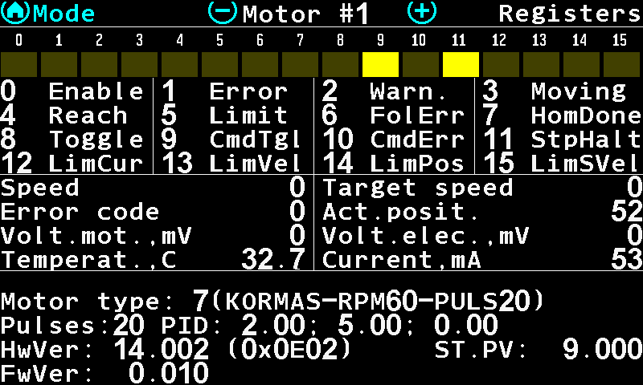
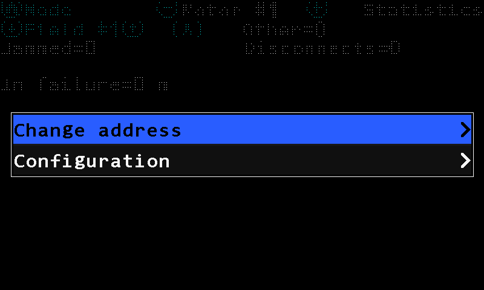

Configure the motor controllers
Give a metering motor controller its address, choose the kind of controller, and set its parameters.
The controllers that drive the metering motors are not addressed from “Sensors Configuration”. They have their own way in, their own choice of controller kind and their own parameters.
Open the motor controller menu
Raise the level to “Service” (Enable the Agronomist level — choose “Service”).
Press “MENU” → “Service” → “Electric motors”. The Motors screen opens.

The Motors screen of motor 1, page “Registers”. Press “MENU” on the Motors screen. Two items appear, both at the “Agronomist” level: “Change address” and “Configuration”.

The menu of the Motors screen.
On a panel built for a system without electric motors, “Electric motors” is not in the “Service” menu at all.
Change the address
Select “Change address” and press “MENU”. Three items open.
“Motor address” — the address the controller answers on now. Leave it as found.
“New address” — the address it is to take. Take it from the data sheet of the system; the values are not printed in this manual.
Select “Set” and press “MENU” to write it.
Choose the controller kind
“Configuration” opens the configuration of the controller. Four kinds are supported, offered by number:
| Kind | What it is |
|---|---|
| “1)universal” | The universal controller: two DC channels or one stepper channel on the same board. |
| “2)DC motor” | A DC motor controller. |
| “3)STEPPER fw0.006+” | A stepper controller, firmware 0.006 and later. |
| “4)BGxxCI” | A BG45CI motor with the controller built in, on the older board. |
The panel reads the kind back from the controller and opens on the one that answers. Choosing another kind by hand is how a replacement board is set up — not a way to change what a motor is.
Set the parameters
Every configuration menu ends with “Set”, and “Set” carries a value of its own: the address group, 0 to 3. Nothing reaches the controller until “Set” is entered — the items above it change the numbers the panel holds, not those the controller runs on.
| Kind | What it is given |
|---|---|
| STEPPER | “Pulses” 1 … 8192 — the pulses of one turn of the motor shaft; “Motor type” from a list; “Set”. |
| BGxxCI | “Pulses” 1 … 8192; “Set”. Nothing else — the controller carries the rest. |
| DC motor | “Pulses”, “Motor type”, the regulator terms “PID kP”, “PID kI”, “PID kD” (0 … 65535, read as hundredths), “TURBINA” 0/1, and two speed–time pairs “TIME1” / “SPEED1”, “TIME2” / “SPEED2”; “Set”. |
| universal | The largest set, in three menus: “Work mode”, “Inputs setup” and “Parameters”. |
The “Parameters” menu of the universal controller:
| Parameter | Range |
|---|---|
| “Motor type” | 0 … 255, from the controller's own table |
| “Pulses” | 1 … 8192 per shaft turn |
| “Acceleration,Ms” / “Deceleration,Ms” | 50 … 65535 — the ramp up and down |
| “Minimum, rpm” / “Maximum, rpm” | 0 … 65535 — the shaft speed window |
| “PID kP”, “PID kI”, “PID kD” | 0 … 65535, hundredths |
| “!! Temp,*C” | 0 … 200 — the temperature at which the controller alarms |
| “I_peak,A” / “I_peak,mS” | the peak current and how long it may be drawn |
| “I_push,A” / “I_push,Sec” | the breakaway current and its time |
| “I_hilo,A” / “I_hilo,Sec” | the sustained-current threshold and its time |
| “Set” | writes all of it, at the chosen address group |
The items “PID kP”, “PID kI”, “PID kD”, “TURBINA”, “TIME1”, “SPEED1”, “TIME2”, “SPEED2”, “!! Temp,*C”, “I_peak,A”, “I_push,A”, “I_hilo,A” and their time partners read the same in every language of the panel.
Reading what the controller reports: Motor controller diagnostics.
Something your machine does that this page does not answer? Write to support@agriwelt.com — an engineer answers.